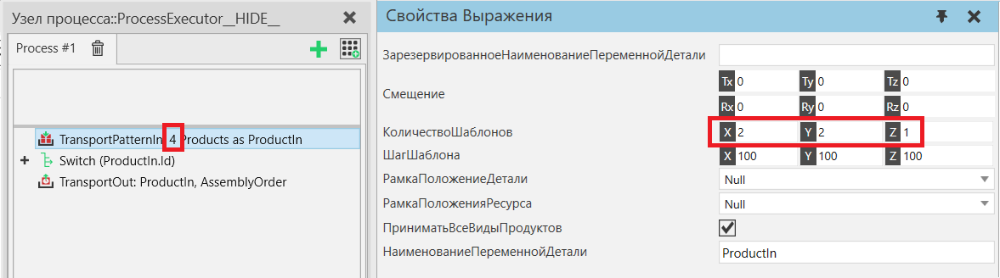

Транспортировка Паттерна В |
|
Транспортировка Паттерна В позволяет последовательно транспортировать доступные экземпляры продукта в шаблон. Зарезервированные продуктыТранспортировкаПаттернаВ поддерживает использование продуктов, зарезервированных в операторе Зарезервировать продукт . Определите, какой зарезервированный продукт используется свойством ЗарезервированноеНаименованиеПеременнойДетали. Если есть предварительно зарезервированные продукты, они первыми заполняются в шаблоне. Шаблон может быть частично или полностью заполнен из заранее зарезервированных продуктов. Использованные предварительно зарезервированные продукты удаляются из списка ввода. Если это единственное значение, переменная сбрасывается. Если предварительно зарезервированных продуктов больше, чем помещается в шаблон, неиспользуемые остаются в переменной и могут использоваться другими операторами, поддерживающими их транспортировку. Другие продуктыПродукт, соответствующий фильтру продуктов, сначала резервируется, а затем вносится с помощью транспортной системы.
 Свойства
|